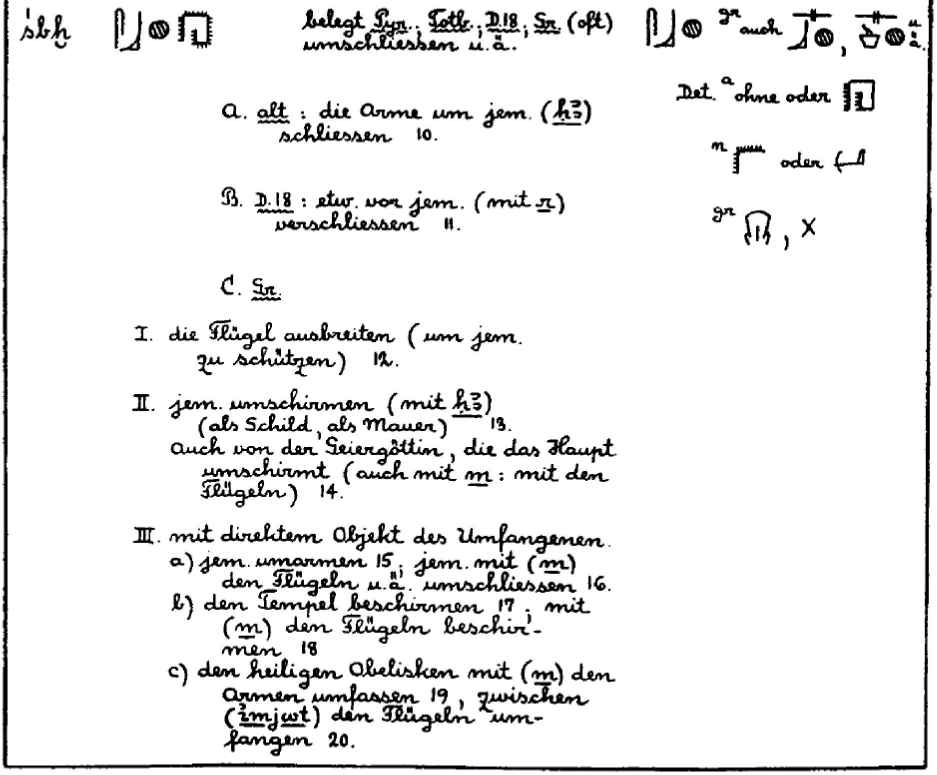
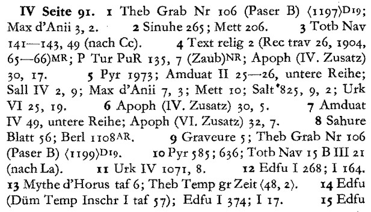
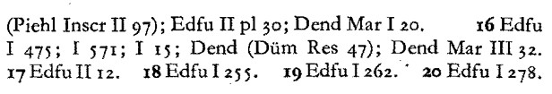
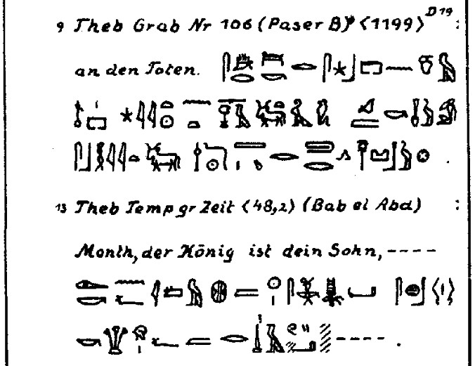

belegt Pyr.. Totb.. D.18; Sr. (oft) umschliessen u.a. A. alt : die Arme um jem. (h3) schliessen B. D.18 : etw. vor jem. (mit r) verschiessen 11. C. Sr. I. die Flugel ausbreiten (um jem. zu schutzen) 12. II. jem. umschirmen (mit h3) (als Schild, als Mauer) 13. auch von der Geiergottin, die das Haupt umschirmt (auch mit m : mit den flugeln) 14. III. mit direktem Objekt des Umfangenen. a) jem. umarmen 15 ; jem. mit (m) den Flugeln u.a. umschliessen 16. b) den Tempel beschirmen 17 ; mit (m) den Flugeln beschirmen 18 c) den heiligen Obelisken mit (m) den Armen umfassen 19, zwischen (imjwt) den Flugeln umfangen 20. ============== Attested in Pyr.. Totb.. D.18; Sr. (often) enclose, among other things. A. old: to wrap one's arms around someone (h3) 10. B. D.18: to shield/shoot something from/at someone (with r) 11.??? C. Sr. I. spread one's wings (to protect someone) 12. II. shield someone (with h3) (as a shield, as a wall) 13. also of the vulture goddess who shields the head (also with m: with her wings) 14. III. with the direct object of the person being embraced. a) to embrace someone 15 ; to enclose someone with (m) wings, etc. 16. b) to shield the temple 17 ; to shield with (m) wings 18 c) to embrace the sacred obelisk with (m) arms 19, to enclose between (imjwt) wings 20. Translated with DeepL.com (free version) 10 Pyr 585; 636; Totb Nav 15 B III 21 (nach La). 11 Urk IV 1071, 8. 12 Edfu I 268; I 164. 13 Mythe d'Horus taf 6; Theb Temp gr Zeit <48,2> 14 Edfu (Dum Temp Inschr I taf 57); Edfu I 374; I 17 15 Edfu (Piehl Inscr II 97); Edfu II pl 30; Dend Mar I 20. 16 Edfu I 475; I 571; I 15; Dend (Dum Res 47); Dend Mar III 32. 17 Edfu II 12. 18 Edfu I 255. 19 Edfu I 262. 20 Edfu I 278. Dum Res: Dümichen, Johannes (Band 1): Resultate der auf Befehl Sr. Majestät des Königs Wilhelm I. von Preussen im Sommer 1868 nach Aegypten entsendeten Archäologisch-Photographischen Expedition — Berlin, 1869 https://digi.ub.uni-heidelberg.de/diglit/duemichen1869/0097/image,info Edfu I : Chassinat, Emile - Le temple d'Edfou -I https://books.google.com/books?id=biikxgEACAAJ https://adw-goe.de/en/research/completed-research-projects/academies-programme/the-inscriptions-of-the-ptolemaic-temple-of-edfu/ Dendera https://www.ancientegyptfoundation.org/auguste_mariette-bey_denderah.shtml